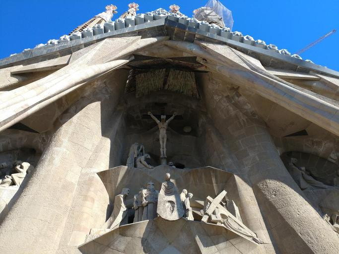
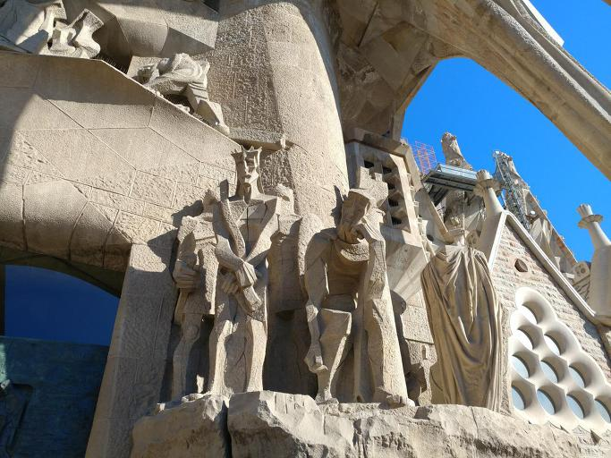
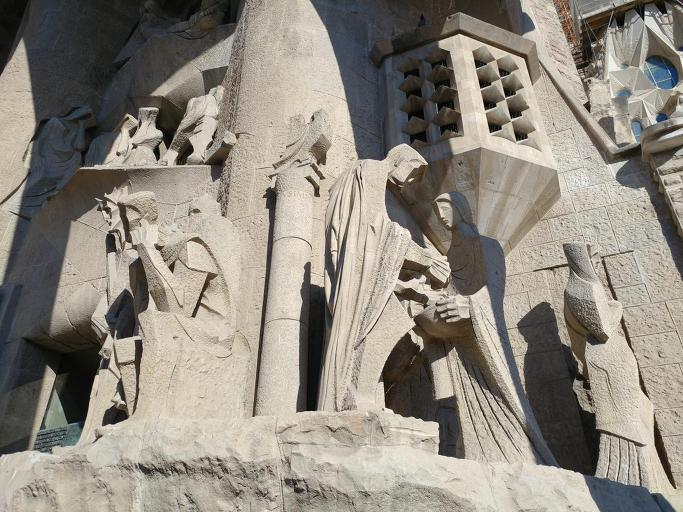
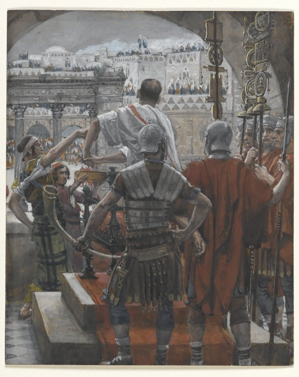

스페인 여행기 (2) - 빌라도, 손을 씻다
게시: 2017-01-08T14:13:34+09:00
저는 건축에 대해 전혀 모르고, 이번에 처음 본 카사 바트요와 카사 미야 등 가우디가 지은 작품에서도 뭔가 해괴하다는 느낌 외에는 사실 별로 받은 느낌이 없습니다. 그러나 사그라다 파밀리아(Sagrada Familia, 성가족) 성당, 특히 그 내부를 보니 정말 대단하다 멋있다 굉장하다라는 느낌이 확 들었습니다. 원래 카톨릭 성당이라는 건물은, 과거 기독교에 대해 잘 알지 못하는 농민들에게 경외감을 불어넣고, 또 문맹인 사람들에게 성경 이야기를 알려주기 위해 많은 조각과 그림으로 장식되어 있다고 하지요. 이번에 느낀 건데, 제가 그런 웅장한 종교적 상징에 약한가 봅니다. 저는 사그라다 파밀리아에서 가장 인상 깊게 본 부분이, 가우디 사후에 지어진 서쪽 벽면인 고난의 문(Passion Façade) 쪽이었습니다. 이유는 거기에 큰 S자 모양으로 배치된 예수의 고난 이야기 조각상들 때문입니다.

(Passion Facade 입니다. 특히 십자가에 달린 예수 상에서, 십자가가 그냥 건축용 H빔으로 되어 있는 것과, 예수가 완전 나체로 되어 있는 부분에 대해 말이 많으며, 교내의 토론 결과에 따라 이는 나중에 고쳐질 수도 있다고 합니다. 그리고 아래 부분, 골고다 언덕 길에서의 베로니카 성녀 맨 왼쪽에 있는 사람은 바로 가우디의 옆 얼굴입니다.)
여기에는 최후의 만찬부터 예수에게 키스하는 유다, 예수를 3번 부정하는 베드로며, 심지어 예수의 옷을 놓고 도박을 하는 로마 병사들의 모습까지 나옵니다. 제가 가장 인상 깊게 본 것은 빌라도의 심판 부분입니다. 특이하게도, 거기엔 한 장면에 빌라도가 두 번 나옵니다. 한번은 죄가 없어 보이는 예수의 처리를 어떻게 할 것인가 빌라도가 고민하는 모습이고, 다음에는 빌라도가 등을 돌리고 손을 씻는 모습입니다.


기독교를 믿지 않는 분들도 아마 빌라도가 손을 씻는 장면의 의미를 다 이해하실 것입니다. 바로 책임 회피입니다.
http://nocr.net/index.php?document_srl=25614&mid=koreasy 에서 보시지요.
27:23 빌라도가 물었습니다. “그 이유가 무엇이냐? 그가 무슨 악한 일을 했느냐?” 그러자 사람들은 더 크게 소리쳤습니다. “그를 십자가에 매달아 죽이시오!”
27:24 빌라도는 자기로서는 어찌할 도리가 없다는 것을 깨달았습니다. 그리고 잘못하면 폭동이 일어날지도 모른다고 생각하였습니다. 그래서 그는 물을 떠다가 사람들 앞에서 손을 씻으며 말했습니다. “나는 이 사람의 피에 대하여 아무런 책임이 없다. 너희가 알아서 해라.”

여기서 유대인들이 유대인의 종교 재판인 산헤드린 회의에서 예수를 죽이기로 하고도 헤롯 왕에게 끌고 갔다가 다시 굳이 로마 총독 빌라도에게 끌고 간 것은 당시 사형 집행 권한이 오직 로마 총독에게 있었기 때문이었습니다. 이는 당시 지중해 세계의 패권을 쥔 문명국이었던 로마가 각 지방 속주의 자치권을 인정하면서도 로마 제국 내 그 속주민들의 최소한의 인권을 보호하기 위한 조치였습니다. 즉, 로마 총독인 빌라도에게는, 만약 예수에게 죄가 없다면 그의 목숨을 보호해야 할 책무가 있었던 것입니다. 그러나 빌라도는 유대인들이 떼로 몰려와 '자신들의 종교를 모독한 예수를 처형해달라'고 난동을 부리자, 중요해 보이지도 않는 예수를 위해 굳이 말썽을 무릅쓰고 싶지 않았던 것입니다. 이는 중대한 직무 유기이고, 괜히 손을 씻는다고 해결될 문제가 아니었습니다. 만약 그런 책임을 지기 싫었다면, 총독 자리를 맡아서는 안 되는 것이었습니다.
요즘처럼 평소 온갖 권력의 특혜를 다 누려놓고 정작 중요한 문제가 생기자 '저는 모르는 일입니다' '저는 알지 못합니다' '저는 책임이 없습니다'라는 고위 공직자들의 책임 회피와 거짓 증언이 난무할 때, 저렇게 빌라도가 뒤돌아서서 손을 씻는 모습의 조각을 보니, 제게 더욱 깊은 인상으로 다가왔던 모양입니다. 아마, 가우디의 뜻을 이어 고난의 문 조각을 담당한 수비락스(Josep Maria Subirachs)가 굳이 빌라도를 두 번 출연시킨 것도 그런 인간으로서의 사회적 책무를 강조하기 위한 것이 아닐까 싶습니다.
사족을 달자면, 문제의 장면은 사실 4대 복음서에 다 공통적으로 나오는 것이 아니라, 오직 마태복음에만 나옵니다. 주로 해외에 거주하던 유대인들이 쓰던 헬라어(그리스어)로 쓰인 마태복음에서는 기독교와 로마의 갈등을 최소화하고, 유대 지방에 있는 근본주의 유대인들을 비난하는 경향이 있는데, 특히 저 윗 구절 바로 뒤에 이어지는 구절에서 그 경향이 좀 지나치게 드러납니다.
27:25 사람들이 한결같이 대답했습니다. “그의 피에 대한 책임은 우리와 우리 아이들이 지겠습니다.”
이건 제가 어릴 적 성경을 읽으면서도 '세상에 어떤 부모가 그 저주를 자기 뿐만 아니라 자기 자식들까지 가져가겠다고 맹세를 한단 말인가, 믿기 어렵다' 라고 생각한 적이 있습니다. 이 구절 때문에 유대민족은 '예수님을 살해한 민족'이라는 저주를 받으며 2천년 동안 유럽에서 갖은 박해를 받아야 했습니다. 성서도 사람이 쓴 것이고, 당연히 그 작가에 따라 어떤 의도가 들어갔다고 해석하면 이야기가 쉬운데, '성경은 한글자한글자 하나님의 신비한 힘을 받아 씌여진 것이므로 단 한글자도 잘못된 것이 없다'라고 믿는다면, 여전히 유대인은 예수의 죽음에 대해 책임을 져야 하는 저주받은 운명을 지고 있는 것이 됩니다. 제가 신심이 약해서 그렇겠습니다만, 저는 수긍하기가 어렵더군요.